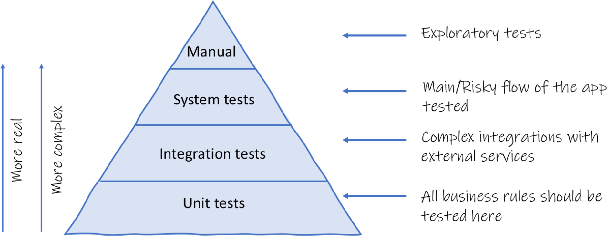
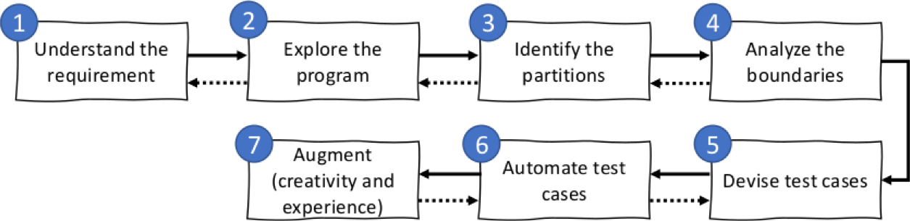
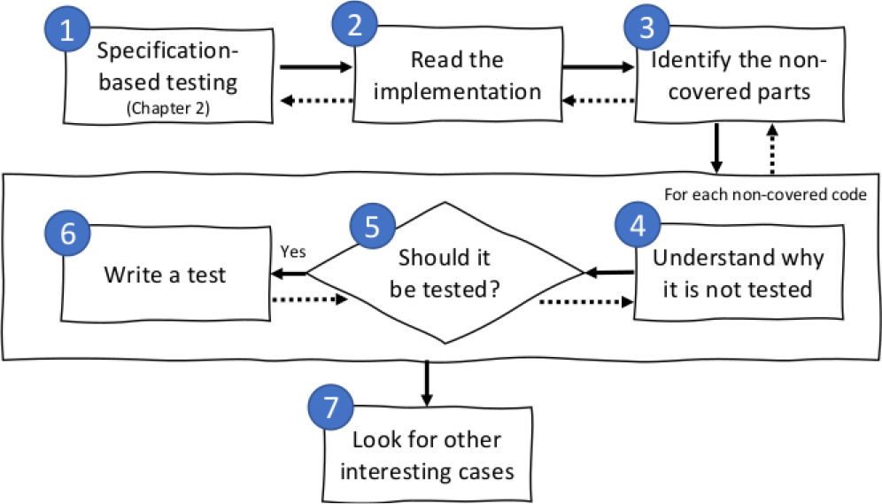
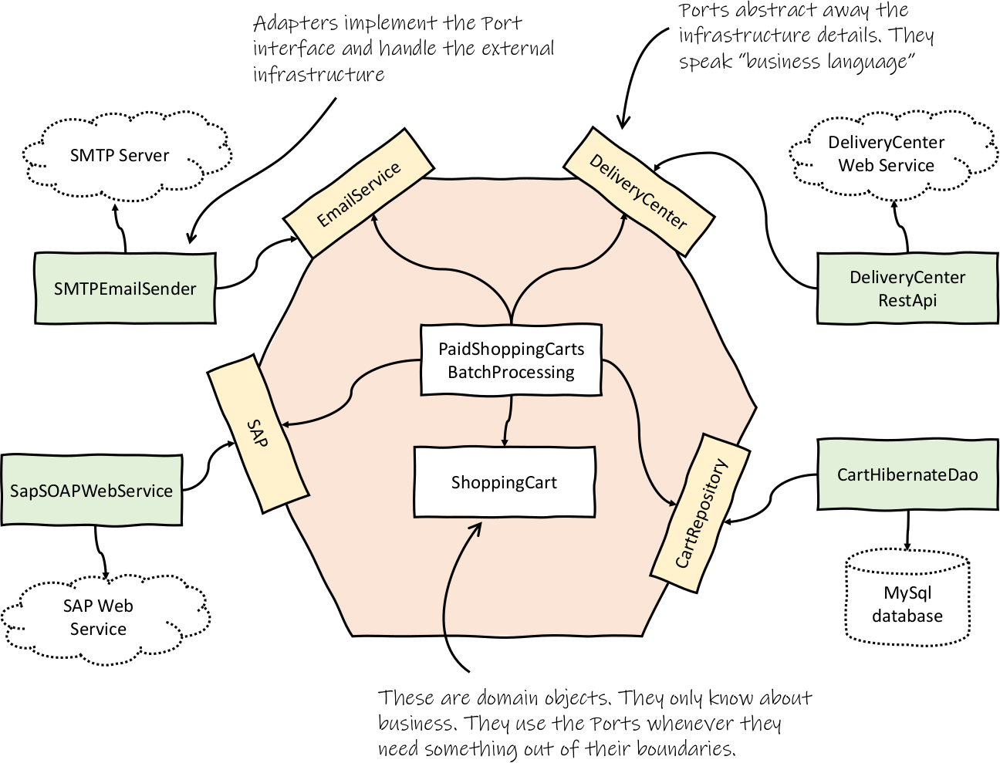

Effective Software Testing
Maurício Aniche

https://www.effective-software-testing.com
Assistant Professor
Tech Academy Lead
Why did I write this book?
To teach software testing @ Delft
Books were either too theoretical or too practical
What's the big novelty?
I see two of them
Testing as a tool...
to find bugs
and
to guide development
Contemporary developer testing
- Create tests that really find bugs
- Use code coverage in the right away
- When to go for unit, integration or system testing
- Use mocks and stubs to simplify your unit testing
- Design testable systems
- Write maintainable test code
Testing pyramid
Specification-based testing
find <pattern> <file>
- Pattern size: empty, single character, many characters, longer than any line in the file.
- Quoting: pattern is quoted, pattern is not quoted, pattern is improperly quoted.
- File name: good file name, no file name with this name, omitted.
- Occurrences in the file: none, exactly one, more than one.
- Occurrences in a single line, assuming line contains the pattern: one, more than one.
Code coverage the right way
Developers hate coverage because they are using it wrong!
Coverage as a way to augment your tests
Mocking
- Support development
- Simplify testing
Designing for testability
5 things to pay attention to
public class VeryBadPaidShoppingCartsBatch {
public void processAll() {
ShoppingCartHibernateDao db = new ShoppingCartHibernateDao();
List<ShoppingCart> paidShoppingCarts = db.cartsPaidToday();
for (ShoppingCart cart : paidShoppingCarts) {
DeliveryCenterRestApi deliveryCenter =
new DeliveryCenterRestApi();
LocalDate estimatedDayOfDelivery = deliveryCenter.deliver(cart);
cart.markAsReadyForDelivery(estimatedDayOfDelivery);
db.persist(cart);
SMTPCustomerNotifier notifier = new SMTPCustomerNotifier();
notifier.sendEstimatedDeliveryNotification(cart);
SAPSoapWebService sap = new SAPSoapWebService();
sap.cartReadyForDelivery(cart);
}
}
}
public class PaidShoppingCartsBatch {
private ShoppingCartRepository db;
private DeliveryCenter deliveryCenter;
private CustomerNotifier notifier;
private SAP sap;
public PaidShoppingCartsBatch(ShoppingCartRepository db,
DeliveryCenter deliveryCenter,
CustomerNotifier notifier, SAP sap) {
this.db = db;
this.deliveryCenter = deliveryCenter;
this.notifier = notifier;
this.sap = sap;
}
public void processAll() {
List<ShoppingCart> paidShoppingCarts = db.cartsPaidToday();
for (ShoppingCart cart : paidShoppingCarts) {
LocalDate estimatedDayOfDelivery = deliveryCenter.deliver(cart);
cart.markAsReadyForDelivery(estimatedDayOfDelivery);
db.persist(cart);
notifier.sendEstimatedDeliveryNotification(cart);
sap.cartReadyForDelivery(cart);
}
}
}
Hexagonal architecture
Larger tests
Integration and system test are also super important!
Cost/Benefit analysis
What is the benefit of writing this as an integration test? How much is it going to cost me?
Maintainable test code
Tests should be fast
Tests should be cohesive, independent, and isolated
Tests should have a reason to exist
Tests should be repeatable and not flaky
Tests should have strong assertions
Maintainable test code
Tests should break in case the behavior changes
Tests should have a single and clear reason to fail
Tests should be easy to write
Tests should be easy to read
Tests should be easy to change and evolve
What else?
Property-based testing
TDD
Monitoring (not covered)
intelligent testing (not covered)
Wanna know more?
https://www.effective-software-testing.com